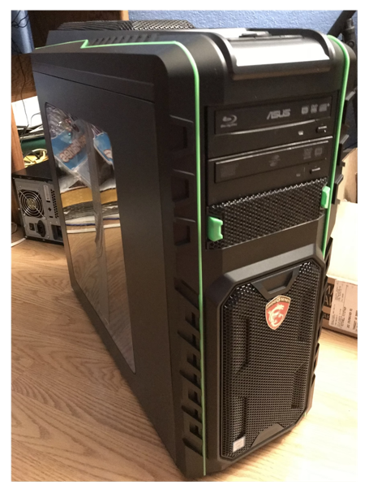

Section 3: "The Building Process"
In 2018 I began to formulate my master plan to build my supercomputer and use it as the basis for my senior project. My idea was to use my original concept of building a computer to replace my school's old server controller system with a more powerful and modern one. So I set out to get the money for the many parts I would need over nearly a solid year and a half of hard work. I did many odd jobs and eventually became employed at a McDonald's restaurant (which was not that great but a good learning experience). Finally, I was able to purchase the needed parts to build my creation, which I lovingly named "The HECKLER Saturn."
The Following series of links are to the differnt parts I purchased for this system.
Unfortunately I was unable to find the name and maker of the case I used, but here is the photo I got of it when I first bought it.

Once I collected all the parts I needed, I began to build my machine! This is the one photo I took of "the asssembly stage" before I started to build it.
Once the building was complete, this was the end result!

The Saturn Proved to be a mighty and sound machine when I first created it. It has been one of my first significant accomplishments, and it would lead to even more accomplishments as well! Firstly, I would graduate High school despite not passing the final exam I needed to give. This is because there was a loophole found that stated if my SAT score was above a specific marker, it could count for my exam in its place. Not only was my SAT score good enough to get me out of High school, but it also was enough to get me accepted to in all honesty, the best University for me. UWB is a quiet and relaxing place for studying and working towards my dream of getting a major in Applied Computing, which also was kickstarted by both my love of computers and the completion of the Saturn. If I had not started on the path to building this incredible machine, I would not be where I am today.
Click to Return to mainpage!
Main Page